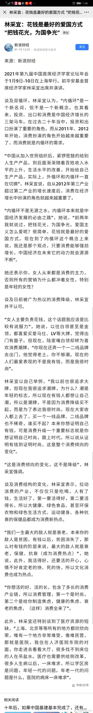

回复@gongyunhao:鼓励别人消费自己存钱不是两全其美吗？//@gongyunhao:价值观告诉我们要艰苦朴素,但是经济运行逻辑希望我们使劲消费,最好借贷消费 ,要精神分裂了//@ETF拯救世界:图片评论
,要精神分裂了//@ETF拯救世界:图片评论  评论配图
评论配图

@财联社APP:
【林采宜：花钱是最好的爱国方式 “把钱花光为国争光”】前华安基金首席经济学家林采宜认为，“内循环”是一个新名词，但不是一个新概念。“内循环不是无源之水，内循环本来就是中国经济发展的必由之路”。她说，“前两年我就说过，把钱花光，为国争光。爱国主义怎么爱呢？很简单，花钱就是最好的爱国方式；现在到了内循环这个概念上来说，我还是那个观点，只要消费能够强劲增长，中国经济在未来它的动力就会源源不断”。
谈及消费结构的变化，林采宜表示，拉动消费的产业，不仅仅只是吃喝，人有了钱，生活好了，第一要活得好，第二要活得长，所以大健康、绿色食品、甚至环保衣物和绿色生活方式、运动健身、各种抗衰的保健品都成为消费新热点。（新浪财经）
谈及消费结构的变化，林采宜表示，拉动消费的产业，不仅仅只是吃喝，人有了钱，生活好了，第一要活得好，第二要活得长，所以大健康、绿色食品、甚至环保衣物和绿色生活方式、运动健身、各种抗衰的保健品都成为消费新热点。（新浪财经）
- 